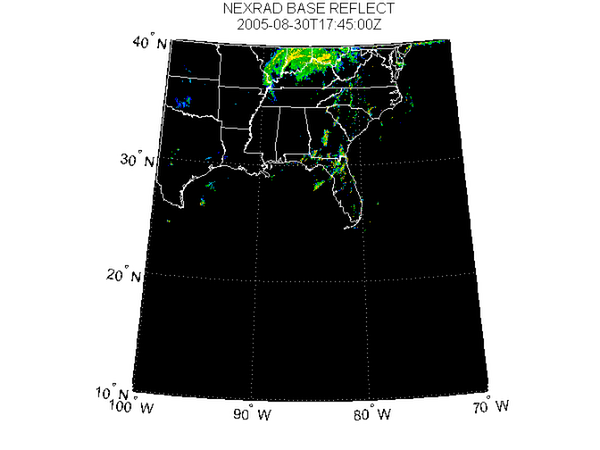
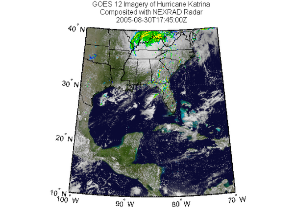
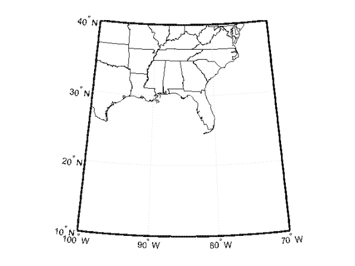
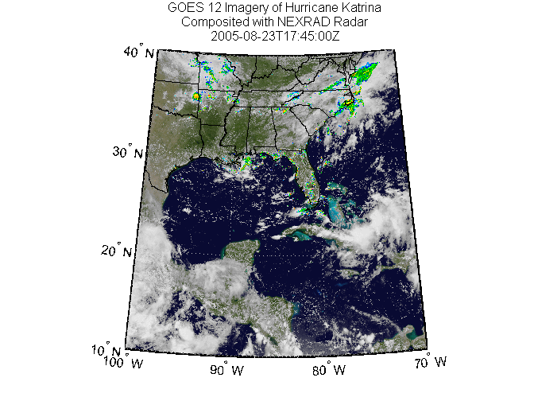

Compositing and Animating Web Map Service (WMS) Meteorological Layers
This demo shows how to composite and animate data from multiple Web Map Service (WMS) layers. The base layer is from the NASA Goddard Space Flight Center's Scientific Visualization Studio Image Server. The data in this layer shows satellite cloud data during hurricane Katrina from August 23 through August 30 2005. The cloud data was extracted from GOES-12 imagery and overlaid on a color image of the southeast United States. Next-Generation Radar (NEXRAD) images, collected by the Iowa State University's Iowa Environmental Mesonet Web map server, are composited with the cloud data at regular intervals of time.
This demo accesses the Internet to dynamically render and retrieve maps from WMS servers. An Internet connection must be established to run the demo. Note that the WMS servers may be unavailable, and several minutes may elapse before the maps are returned. One of the challenges of working with WMS servers is that sometimes you will encounter server errors. A function, such as wmsread, may time out if a server is unavailable. Often, this is a temporary problem and you will be able to connect to the server if you try again later. For a list of common problems and strategies for working around them, please see the Common Problems with WMS Servers section in the Mapping Toolbox™ User’s Guide.
Contents
- Understanding Basic WMS Terminology
- Step 1: Find Katrina Layers From Local Database
- Step 2: Synchronize WMSLayer Object with Server
- Step 3: Explore Katrina Layer Details
- Step 4: Retrieve Katrina Map from Server
- Step 5: Find NEXRAD Radar Layer
- Step 6: Obtain Extent Parameters
- Step 7: Retrieve NEXRAD Radar Map from Server
- Step 8: Composite NEXRAD Radar Map with Katrina Map
- Step 9: Animate the Katrina and NEXRAD Maps
- Step 10: Create and View an Animated GIF
- Credits
Understanding Basic WMS Terminology
If you are new to WMS, several key concepts are important to understand and are listed here.
- Web Map Service — The Open Geospatial Consortium (OGC) defines a Web Map Service (WMS) to be an entity that "produces maps of spatially referenced data dynamically from geographic information."
- WMS server — A server that follows the guidelines of the OGC to render maps and return them to clients
- map — The OGC definition for map is "a portrayal of geographic information as a digital image file suitable for display on a computer screen."
- layer — A dataset of a specific type of geographic information, such as temperature, elevation, weather, orthophotos, boundaries, demographics, topography, transportation, environmental measurements, and various data from satellites
- capabilities document — An XML document containing metadata describing the geographic content offered by a server
Step 1: Find Katrina Layers From Local Database
One of the more challenging aspects of using WMS is finding a WMS server and then finding the layer that is of interest to you. The process of finding a server that contains the data you need and constructing a specific and often complicated URL with all the relevant details can be very daunting.
The Mapping Toolbox™ simplifies the process of locating WMS servers and layers by providing a local, installed, and pre-qualified WMS database, that is searchable, using the function wmsfind. You can search the database for layers and servers that are of interest to you. Here is how you find layers containing the term katrina in either the LayerName or LayerTitle field of the database:
katrina = wmsfind('katrina'); whos katrina
Name Size Bytes Class Attributes katrina 146x1 70526 WMSLayer
The search for the term 'katrina' returned a WMSLayer array containing over 100 layers. To inspect information about an individual layer, simply display it like this:
katrina(1)
ans =
WMSLayer
Properties:
Index: 1
ServerTitle: 'NASA SVS Image Server'
ServerURL: 'http://aes.gsfc.nasa.gov/cgi-bin/wms?'
LayerTitle: 'GOES-12 Imagery of Hurricane Katrina: Longwave Infrared Close-up (1024x1024 Animation)'
LayerName: '3216_22510'
Latlim: [15.0000 45.0000]
Lonlim: [-100.0000 -70.0000]
If you type, katrina, in the command window, the entire contents of the array are displayed, with each element's index number included in the output. This display makes it easy for you to examine the entire array quickly, searching for a layer of interest. You can display only the LayerTitle property for each element by executing the command:
katrina.disp('Properties', 'layertitle', 'Index', 'off', 'Label', 'off');
As you've discovered, a search for the generic word 'katrina' returned results of over 100 layers and you need to select only one layer. In general, a search may even return thousands of layers, which may be too large to review individually. Rather than searching the database again, you may refine your search by using the refine method of the WMSLayer class. Using the refine method is more efficient and returns results faster than wmsfind since the search has already been narrowed to a smaller set. Supplying the query string, 'goes-12*katrina*visible*close*up*animation', to the refine method returns a WMSLayer array whose elements contain a match of the query string in either the LayerTitle or LayerName properties. The * character indicates a wild-card search.
katrina = katrina.refine('goes-12*katrina*visible*close*up*animation'); whos katrina
Name Size Bytes Class Attributes katrina 2x1 1032 WMSLayer
Step 2: Synchronize WMSLayer Object with Server
The database only stores a subset of the layer information. For example, information from the layer's abstract, details about the layer's attributes and style information, and the coordinate reference system of the layer are not returned by wmsfind. To return all the information, you need to use the wmsupdate function. wmsupdate synchronizes the layer from the database with the server, filling in the missing properties of the layer.
Synchronize the first katrina layer with the server and display the abstract information.
katrina = wmsupdate(katrina(1));
disp(['<html>' katrina.Abstract '</html>'])The GOES-12 satellite sits at 75 degrees west longitude at an altitude of 36,000 kilometers over the equator, in geosynchronous orbit. At this position its Imager instrument takes pictures of cloud patterns in several wavelengths for all of North and South America, a primary measurement used in weather forecasting. The Imager takes a pattern of pictures of parts of the Earth in several wavelengths all day, measurements that are vital in weather forecasting. This animation shows a daily sequence of GOES-12 images in the visible wavelengths, from 0.52 to 0.72 microns, during the period that Hurricane Katrina passed through the Gulf of Mexico. At one kilometer resolution, the visible band measurement is the highest resolution data from the Imager, which accounts for the very high level of detail in these images. For this animation, the cloud data was extracted from GOES image and laid over a background color image of the southeast United States.
Step 3: Explore Katrina Layer Details
You can find out more information about the katrina layer by exploring the Details property of the katrina layer. The Details.Attributes field informs you that the layer has fixed width and fixed height attributes, thus the size of the requested map cannot be modified.
katrina.Details.Attributes
ans =
Queryable: 0
Opaque: 1
NoSubsets: 1
Cascaded: 0
FixedWidth: 1024
FixedHeight: 1024
The Details.Dimension field informs you that the layer has a time dimension
katrina.Details.Dimension
ans =
Name: 'time'
Units: 'ISO8601'
UnitSymbol: ''
Default: '2005-08-30T17:45Z'
MultipleValues: 0
NearestValue: 0
Current: 0
Extent: [1x39 char]
with an extent from 2005-08-23T17:45Z to 2005-08-30T17:45Z with a period of P1D (one day), as shown in the Details.Dimension.Extent field.
katrina.Details.Dimension.Extent
ans = 2005-08-23T17:45Z/2005-08-30T17:45Z/P1D
Step 4: Retrieve Katrina Map from Server
Now that you have found a layer of interest, you can retrieve the raster map using the function wmsread and display the map using the function geoshow. Since Time is not specified when reading the layer, the default time, 2005-08-30T17:45Z, is retrieved as specified by the Details.Dimension.Default field.
[katrinaMap, R] = wmsread(katrina); % Display the katrinaMap and overlay the data % from the usastatehi.shp file. states = shaperead('usastatehi.shp', 'UseGeoCoords', true); figure usamap(katrina.Latlim, katrina.Lonlim) geoshow(katrinaMap, R) geoshow(states, 'FaceColor', 'none') title({katrina.LayerTitle, katrina.Details.Dimension.Default}, ... 'Interpreter', 'none');

Step 5: Find NEXRAD Radar Layer
NEXRAD radar images for the United States are stored on the Iowa State University's IEM Web map server. The server conveniently stores NEXRAD images in five minute increments from 1995-01-01 to the present time. You can find the layer by first searching for the term IEM WMS Service in the ServerTitle field of the WMS database, then refining the search by requesting the layer of interest, nexrad-n0r-wmst.
iemLayers = wmsfind('IEM WMS Service', 'SearchField', 'servertitle'); nexrad = iemLayers.refine('nexrad-n0r-wmst'); % Synchronize the layer with the server. nexrad = wmsupdate(nexrad);
Step 6: Obtain Extent Parameters
To composite the nexrad layer with the katrina layer, you need to obtain the nexrad layer at coincidental time periods, and concurrent geographic and image extents. The Details.Dimension field informs you that the layer has a time dimension and informs you that the layer's time extent includes seconds.
nexrad.Details.Dimension
ans =
Name: 'time'
Units: 'ISO8601'
UnitSymbol: ''
Default: '2006-06-23T03:10:00Z'
MultipleValues: 0
NearestValue: 0
Current: 0
Extent: [1x26 char]
Obtain a time value coincidental with the katrina layer, and add seconds to the time specification.
nexradTime = [katrina.Details.Dimension.Default(1:end-1) ':00Z'];
Assign latlim and lonlim variables. Note that the nexrad layer limits
nexrad.Latlim nexrad.Lonlim
ans =
24 50
ans =
-126 -66
do not extend as far south as the katrina layer limts.
katrina.Latlim katrina.Lonlim
ans =
10 40
ans =
-100 -70
When reading the nexrad layer, values that lie outside the geographic bounding quadrangle of the layer are set to the background color.
latlim = katrina.Latlim; lonlim = katrina.Lonlim;
Assign imageHeight and imageWidth variables.
imageHeight = katrina.Details.Attributes.FixedHeight; imageWidth = katrina.Details.Attributes.FixedWidth;
Step 7: Retrieve NEXRAD Radar Map from Server
You can retrieve the nexradMap from the server, specified at the same time as the katrinaMap and for the same geographic and image extents, by supplying parameter/value pairs to the wmsread function. To accurately retrieve the radar signal from the map, set the ImageFormat parameter to the image/png format. In order to easily retrieve the signal from the background, set the background color to black ([0 0 0]).
% Retrieve the nexradMap. black = [0 0 0]; [nexradMap, R] = wmsread(nexrad, 'Latlim', latlim, 'Lonlim', lonlim, ... 'Time', nexradTime, 'BackgroundColor', black, ... 'ImageFormat', 'image/png', ... 'ImageHeight', imageHeight, 'ImageWidth', imageWidth); % Display the nexradMap. figure usamap(latlim, lonlim) geoshow(nexradMap, R) geoshow(states, 'FaceColor', 'none', 'EdgeColor', 'white') title({nexrad.LayerTitle, nexradTime}, 'Interpreter', 'none');
Step 8: Composite NEXRAD Radar Map with Katrina Map
To composite the nexradMap with a copy of the katrinaMap, you need to identify the non-background pixels in the nexradMap. The nexradMap data is returned as an image with class double, because of how this Web map server handles PNG format, so you need convert it to uint8 before merging.
% Identify the pixels of the nexradMap image % that do not contain the background color. threshold = 0; index = any(nexradMap > threshold, 3); index = cat(3, index, index, index); % Composite the nexradMap with the katrinaMap. combination = katrinaMap; combination(index) = uint8(nexradMap(index)*255); % Display the composited map. figure usamap(latlim, lonlim) geoshow(combination, R); geoshow(states, 'FaceColor', 'none') title({'GOES 12 Imagery of Hurricane Katrina', ... 'Composited with NEXRAD Radar', nexradTime})
Step 9: Animate the Katrina and NEXRAD Maps
The next step is to animate the composited katrina and nexrad maps.
% Create variables that contain the time extent % of the katrina layer. extent = katrina.Details.Dimension.Extent; slash = '/'; slashIndex = strfind(extent, slash); startTime = extent(1:slashIndex(1)-1); endTime = extent(slashIndex(1)+1:slashIndex(2)-1); % Calculate numeric values for the start and end days. % Note that the time extent is in yyyy-mm-dd format. hyphen = '-'; hyphenIndex = strfind(startTime, hyphen); dayIndex = [hyphenIndex(2) + 1, hyphenIndex(2) + 2]; startDay = str2double(startTime(dayIndex)); endDay = str2double(endTime(dayIndex)); % Calculate the total number of animation frames and % initialize a structure to hold the resultant frames. frames = struct('cdata', [], 'colormap', []); numFrames = endDay - startDay + 1; frames(numFrames) = frames; frameIndex = 0; % Assign the initial katrinaTime. katrinaTime = startTime;
Since multiple requests to a server are required for animation, it is more efficient to use the WebMapServer and WMSMapRequest classes.
% Construct a WebMapServer object for each layer's server. nasaServer = WebMapServer(katrina.ServerURL); iemServer = WebMapServer(nexrad.ServerURL); % Create WMSMapRequest objects. katrinaRequest = WMSMapRequest(katrina, nasaServer); nexradRequest = WMSMapRequest(nexrad, iemServer); % Assign properties. nexradRequest.Latlim = latlim; nexradRequest.Lonlim = lonlim; nexradRequest.BackgroundColor = black; nexradRequest.ImageFormat = 'image/png'; nexradRequest.ImageHeight = imageHeight; nexradRequest.ImageWidth = imageWidth;
The animation is viewed in a single map display. Outside the animation loop, create a map display.
hfig = figure; usamap(latlim, lonlim); geoshow(states, 'FaceColor', 'none')
To create the animation, loop through each day, from startDay to endDay, and obtain the katrinaMap and the nexradMap for that day. Composite the maps into a single image, display the image, get the frame, and store the results in the frames structure.
% Initialize hmap so it can be deleted on % the first pass through the loop. hmap = []; for k = startDay:endDay % Update the time values and assign the % Time property for each server. katrinaTime(dayIndex) = num2str(k); nexradTime = [katrinaTime(1:end-1) ':00Z']; katrinaRequest.Time = katrinaTime; nexradRequest.Time = nexradTime; % Get the WMS maps from the servers. katrinaMap = nasaServer.getMap(katrinaRequest.RequestURL); nexradMap = iemServer.getMap(nexradRequest.RequestURL); % Identify the pixels of the nexradMap image % that do not contain the background color. index = any(nexradMap > threshold, 3); index = cat(3, index, index, index); % Composite the nexradMap with the katrinaMap. combination = katrinaMap; combination(index) = uint8(nexradMap(index)*255); % Delete the old map and display the new composited map. delete(hmap) hmap = geoshow(combination, katrinaRequest.RasterRef); title({'GOES 12 Imagery of Hurricane Katrina', ... 'Composited with NEXRAD Radar', nexradTime}) drawnow % Update the current frameIndex and % save the current frame. frameIndex = frameIndex + 1; shg frames(frameIndex) = getframe(hfig); end
Step 10: Create and View an Animated GIF
An animation can be viewed in the browser when the browser opens an animated GIF file. To create the data for the file, loop through the frames and convert the RGB image to an indexed image and save the results in the animated array.
% Create the animated array and the color map in the first frame, % then in the loop add the other frames. The animated array must % be four-dimensional for input to imwrite. [animated, cmap] = rgb2ind(frames(1).cdata, 256, 'nodither'); animated(:,:,1,numFrames) = animated; for k=2:numFrames animated(:,:,1,k) = rgb2ind(frames(k).cdata, cmap, 'nodither'); end % Write the animated GIF file. filename = 'wmsanimated.gif'; delayTime = 2.0; imwrite(animated, cmap, filename, ... 'DelayTime', delayTime, 'LoopCount', inf); % View the animated GIF file in the browser. web(filename)

Credits
Katrina Layer
The Katrina layer used in the demo is from the NASA Goddard Space Flight Center's SVS Image Server and is maintained by the Scientific Visualization Studio.
For more information about this server, run:
>> wmsinfo('http://aes.gsfc.nasa.gov/cgi-bin/wms?')NEXRAD Layer
The NEXRAD layer used in the demo is from the Iowa State University's IEM WMS Service server and is a generated CONUS composite of National Weather Service (NWS) WSR-88D level III base reflectivity.
For more information about this server, run:
>> wmsinfo('http://mesonet.agron.iastate.edu/cgi-bin/wms/nexrad/n0r-t.cgi?')